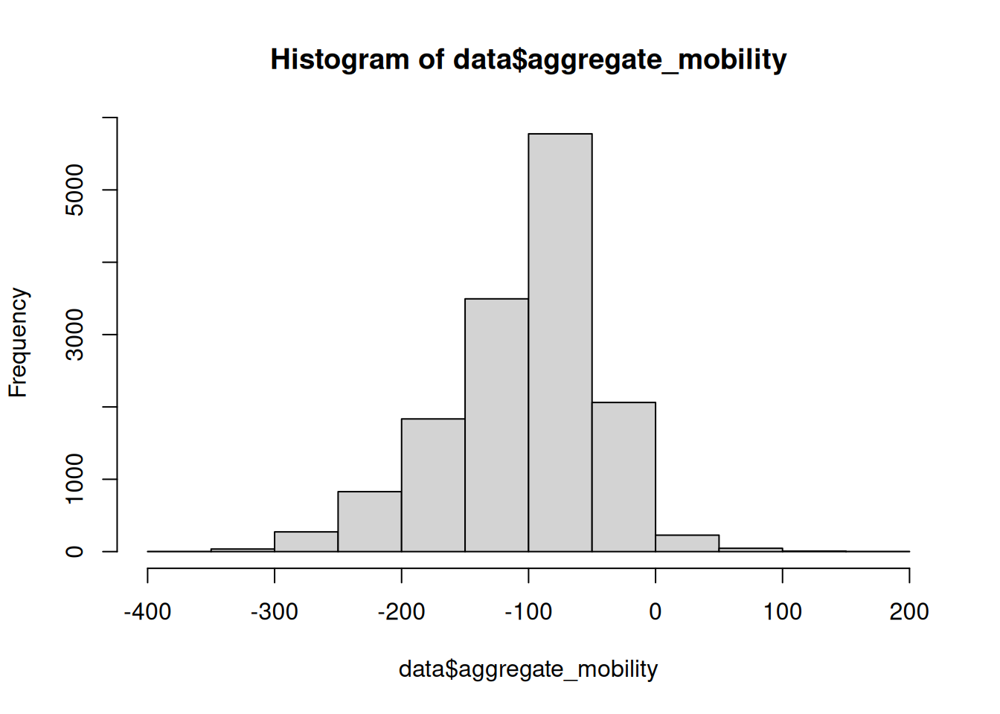
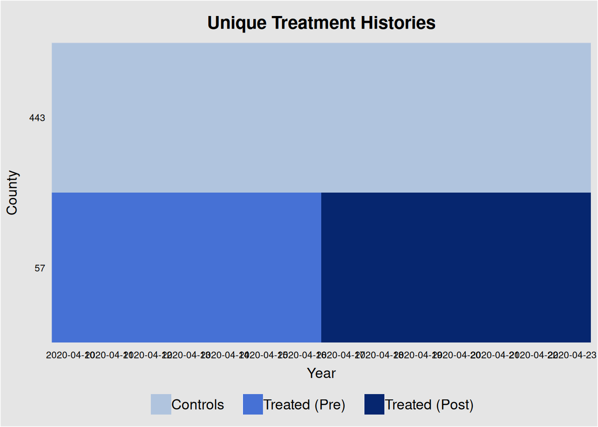
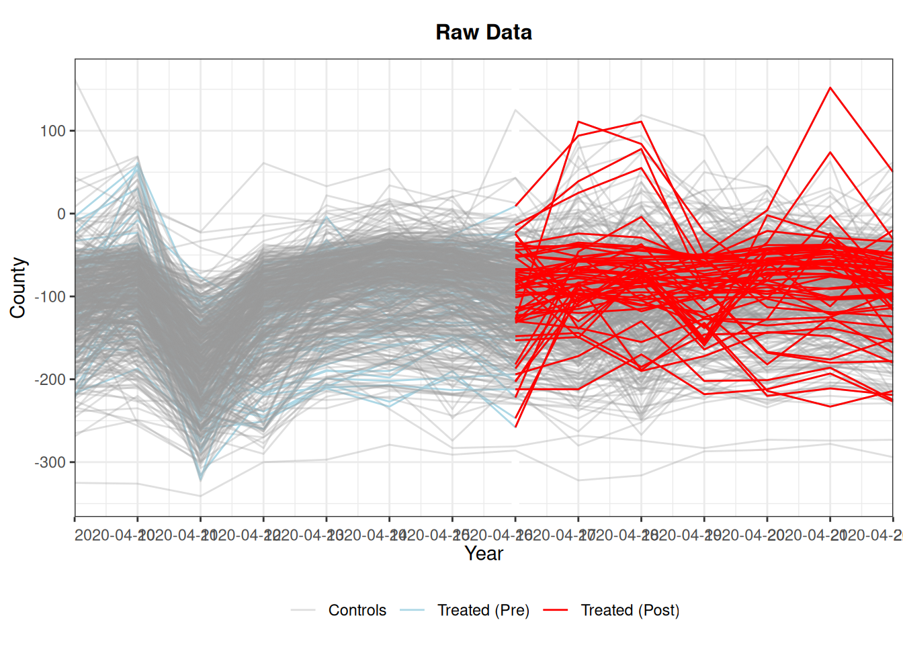
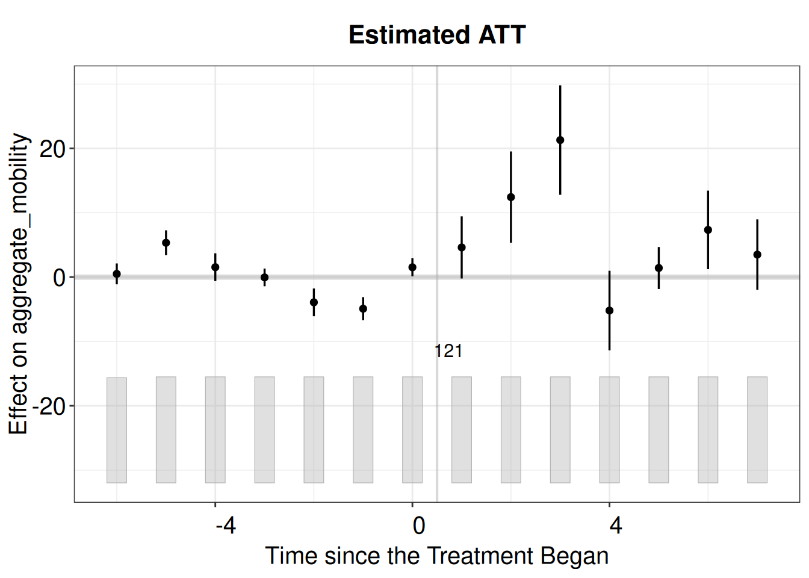

In this notebook, we will estimate the effect of Trump’s calls for liberation in three specific states on compliance with state lockdown restrictions using a Difference-in-Differences (DID) approach. In the article, Republican counties are compared in the treated and control states. We won’t worry about that in this tutorial. Data are from the Google Mobility Reports.
First we install the necessary libraries and load the data
The data can be downloaded from Github here or just read into the notebook from the URL below.
# install packages if they are not already installed# List of package names to installpackages_to_install <-c("fixest", "tidyverse", 'panelView')# Check if each package is already installedfor (package_name in packages_to_install) {if (!(package_name %in%installed.packages())) {# If not installed, install the packageinstall.packages(package_name) }}# load libraries library(fixest) # for fixed effects regressionlibrary(tidyverse) # for data manipulation
── Attaching core tidyverse packages ──────────────────────── tidyverse 2.0.0 ──
✔ dplyr 1.1.4 ✔ readr 2.1.5
✔ forcats 1.0.0 ✔ stringr 1.5.1
✔ ggplot2 3.5.1 ✔ tibble 3.2.1
✔ lubridate 1.9.3 ✔ tidyr 1.3.1
✔ purrr 1.0.4
── Conflicts ────────────────────────────────────────── tidyverse_conflicts() ──
✖ dplyr::filter() masks stats::filter()
✖ dplyr::lag() masks stats::lag()
ℹ Use the conflicted package (<http://conflicted.r-lib.org/>) to force all conflicts to become errors
library(panelView) # for visualizing panel data
## See bit.ly/panelview4r for more info.
## Report bugs -> yiqingxu@stanford.edu.
# load data from Github #data <- read_csv("https://raw.githubusercontent.com/z-dickson/my580-causal-inference/refs/heads/main/data/google_mobility_data.csv")# or, load data from local file if you've cloned the repositorydata <-read_csv("../data/google_mobility_data.csv")
New names:
Rows: 14588 Columns: 22
── Column specification
──────────────────────────────────────────────────────── Delimiter: "," chr
(3): state_name, state_governor_party, winning_party dbl (18): ...1, county,
retail_and_recreation_mobility, grocery_and_pharmac... date (1): date
ℹ Use `spec()` to retrieve the full column specification for this data. ℹ
Specify the column types or set `show_col_types = FALSE` to quiet this message.
• `` -> `...1`
Usually, we would need to clean the data before we can use it for analysis. However, the data is already mostly clean. We will make some key adjustments for demonstration purposes.
Let’s create a column for aggregate_mobility
In the analysis, one of the outcomes is ‘aggregate mobility’, which is a measure of mobility that combines all types of mobility (e.g., retail, grocery, parks, etc.). We will create a new column called aggregate_mobility that sums up all the mobility measures for each observation.
# create variable for aggregate mobility by adding all the mobility variables data$aggregate_mobility = data$retail_and_recreation_mobility + data$grocery_and_pharmacy_mobility + data$parks_mobility + data$transit_mobility + data$workplaces_mobility + data$residential_mobility# check the new columnhist(data$aggregate_mobility)

Let’s create a column for the treatment and control groups
The treatment group is the states where Trump called for liberation (Michigan, Minnesota, and Virginia) and the control group is the states where he did not (all other states).
Note: In the actual study, the treatment group is defined as the states where Trump called for liberation and the control group is the states that were under the same lockdown restrictions but were not targeted in Trump’s calls for liberation. We’ll subset the data so that only Republican states are included in the analysis.
# create a variable for treatment and control groupstargeted_states <-c("Michigan", "Minnesota", "Virginia")data <- data %>%mutate(treatment =ifelse(state_name %in% targeted_states, 1, 0))# check the treatment variableunique(data[data$treatment ==1, 'state_name'])
# A tibble: 3 × 1
state_name
<chr>
1 Michigan
2 Minnesota
3 Virginia
Let’s create the pre-post and treatment-control variables
The pre-post variable indicates whether the observation is before or after Trump’s calls for liberation. Trump’s messages were on April 17, 2020, so we will use that as the cutoff date.
# create a variable for pre-post and treatment-controldata <- data %>%mutate(post =ifelse(date <"2020-04-17", 0, 1))# check the pre-post and treatment-control variables - we'll print all the dates that appear in the data when the pre_post variable is 1unique(data[data$post ==1, 'date'])
How can we further check to see if we correctly created the treatment and control groups?
One option is to visualize the data using a library called PanelView. This library allows us to visualize the data in a panel format, which is useful for checking the balance of the treatment and control groups over time.
# create a treated variable for visualizationdata$under_treatment <- data$post * data$treatment# plot the treatment trajectories over timepanelview(aggregate_mobility ~ under_treatment, data = data, index =c("county","date"), xlab ="Year", ylab ="County", pre.post =TRUE)
If the number of units is more than 300, we set "gridOff = TRUE".
If the number of units is more than 500, we randomly select 500 units to present.
You can set "display.all = TRUE" to show all units.

# we can also plot the outcomes according to treatment status panelview(aggregate_mobility ~ under_treatment, data = data, index =c("county","date"),color =c("lightblue", "red", "#99999950"), type ="outcome", xlab ="Year", ylab ="County", pre.post =TRUE)
If the number of units is more than 500, we randomly select 500 units to present.
You can set "display.all = TRUE" to show all units.
Specified colors in the order of "treated (pre)", "treated (post)", "control".

Let’s estimate the effect of Trump’s calls for liberation on compliance with state lockdown restrictions using a Difference-in-Differences (DID) approach
We will use a fixed effects regression model to estimate the effect of Trump’s calls for liberation on compliance with state lockdown restrictions. The model is specified as follows:
where \(\text{treatment}_{it} = \text{treated}_i * \text{post}_t\).
This is because the interaction term \(\text{treated}_i * \text{post}_t\) is effectively creating a variable that is 1 for treated states in the post-treatment period and 0 otherwise, and the fixed effects absorb the dummy variables. This is the essence of the Difference-in-Differences (DID) approach.
This equation is also effectively the same as the following:
Here, \(\beta_{0}\) captures the average difference between treated and not-treated units. \(\beta_{1}\) captures the average difference pre- and post-treatment. And \(\delta\) captures the difference in these two differences; hence, the name “Difference-in-Differences.”
Estimating the model
There are many ways to estimate a DID model. Here, we will use the fixest package in R.
Fixest syntax using a | to separate the fixed effects from the rest of the formula. Our syntax will look like the following:
Our \(Y_{it}\) is mobility (aggregate_mobility) in county \(i\) (county) on day \(t\) (date).
We will cluster the standard errors at the county level to account for potential correlation within counties.
# estimate the DID modeldid_model <-feols(fml = aggregate_mobility ~ treatment * post | county + date, data = data, vcov =~ county)
The variables 'treatment' and 'post' have been removed because of collinearity (see $collin.var).
etable(summary(did_model))
summary(did_model)
Dependent Var.: aggregate_mobility
treatment x post 6.146** (2.080)
Fixed-Effects: ------------------
county Yes
date Yes
________________ __________________
S.E.: Clustered by: county
Observations 14,588
R2 0.77651
Within R2 0.00118
---
Signif. codes: 0 '***' 0.001 '**' 0.01 '*' 0.05 '.' 0.1 ' ' 1
Interpretation of the results
The coefficient of the interaction term treatment * pre_post in the model output is the estimated causal effect of Trump’s calls for liberation on compliance with state lockdown restrictions, given that our model is specified correctly and the assumptions of the DID approach hold.
The coefficient of the interaction term is the difference-in-differences estimate. It tells us how much the treatment group (states where Trump called for liberation) changed relative to the control group (states where he did not) after the treatment (Trump’s calls for liberation) compared to before the treatment.
The coefficient estimate is the cumulative effect of the treatment over the post-treatment period. Because the ‘post-treatment’ period in the data covers 1-week, the coefficient estimate is the cumulative effect of the treatment over that 1-week period. Hence, the cumulative ATT is about 6 percentage point, given that the outcome variable is in percentage points.
What if we want to estimate the dynamic effects of the treatment over time?
One of the key advantages to DiD is that we can estimate the dynamic effects of the treatment over time. This is typically referred to as the event study approach. Many libraries in R can help us estimate the event study approach. Here, we will use the fixest package to estimate the event study approach.
There are a few things we need to do to prepare the data. First, we need to convert the date variable to an integer. This is because the Fixest library uses a format where the holdout date is specified as an integer.
# convert the date variable to an integerdata$date_int <-as.integer(as.factor(data$date))# check the data by printing a dictionary of the date and the date_int variablesunique(data[c('date', 'date_int')])
We’ll use April 17 – the date of the messages – as the holdout period. This means that the holdout period will be 8 (see above).
# estimate the event study modelevent_study <-feols(fml = aggregate_mobility ~i(date_int, treatment, ref =7) | county + date_int, data = data, vcov =~ county)etable(summary(event_study))
summary(event_st..
Dependent Var.: aggregate_mobility
treatment x date_int = 1 3.707 (2.709)
treatment x date_int = 2 20.70*** (4.322)
treatment x date_int = 3 7.698 (4.929)
treatment x date_int = 4 -3.754 (2.418)
treatment x date_int = 5 -6.852** (2.170)
treatment x date_int = 6 -9.924*** (2.055)
treatment x date_int = 8 2.716 (2.918)
treatment x date_int = 9 19.76*** (4.472)
treatment x date_int = 10 28.80*** (4.841)
treatment x date_int = 11 -4.119 (3.465)
treatment x date_int = 12 -0.5675 (1.845)
treatment x date_int = 13 6.976* (3.246)
treatment x date_int = 14 1.040 (2.682)
Fixed-Effects: ------------------
county Yes
date_int Yes
_________________________ __________________
S.E.: Clustered by: county
Observations 14,588
R2 0.77952
Within R2 0.01463
---
Signif. codes: 0 '***' 0.001 '**' 0.01 '*' 0.05 '.' 0.1 ' ' 1
Plot the event study results
We can plot the event study results to visualize the dynamic effects of the treatment over time. Using the Fixest library, we can use the iplot function to plot the event study results.
iplot(event_study)

How can we improve the analysis?
There are several ways to improve the analysis:
Use a better estimator: While the fixed effects estimator is consistent and robust, it may not be the most efficient estimator. Other estimators, such as synthetic control, matrix completion, or other machine learning methods, may provide more precise estimates.
Include more control variables: Adding more control variables can help reduce bias and improve the precision of the estimates.
Check for parallel trends: The parallel trends assumption is crucial for the validity of the DID approach. Checking for parallel trends visually or using statistical tests can help ensure the validity of the estimates.
Test for sensitivity: Conducting sensitivity analyses, such as placebo tests or robustness checks, can help assess the robustness of the estimates to different model specifications or assumptions.
Extension
In Dickson & Hobolt (2024), we use matrix completion methods to estimate a counterfactual using the data from the control states. We then compare the actual treatment effect to the counterfactual to estimate the causal effect of Trump’s calls for liberation. That’s beyond the scope of this notebook, but I’ll include the code below:
# install packages if they are not already installed# List of package names to installpackages_to_install <-c("fect")# Check if each package is already installedfor (package_name in packages_to_install) {if (!(package_name %in%installed.packages())) {# If not installed, install the packageinstall.packages(package_name) }}library(fect)
Registered S3 method overwritten by 'GGally':
method from
+.gg ggplot2
# create a treatment variable that includes the interaction of treatment and postdata$treatment_post <- data$treatment * data$post# function to estimate the matrix completionestimate <-function(data, formula) {fect(data = data,formula = formula,method ="mc", seed =42,index =c("county", "date_int"),r =c(0, 5),k =10,CV =TRUE,force ="two-way",nlambda =15, se =TRUE,parallel =TRUE,cores =16, # adjust accordingly nboots =200)}# estimate the matrix completion modelfull_state_aggregate <-estimate(data, aggregate_mobility ~ treatment_post)
Parallel computing ...
Cross-validating ...
Criterion: Mean Squared Prediction Error
Some units have too few pre-treatment observations. Remove them automatically in Cross-Validation.